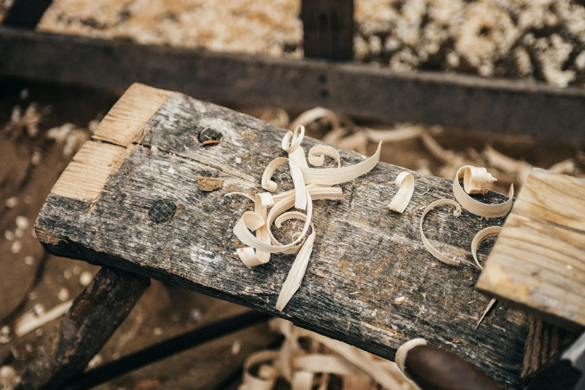
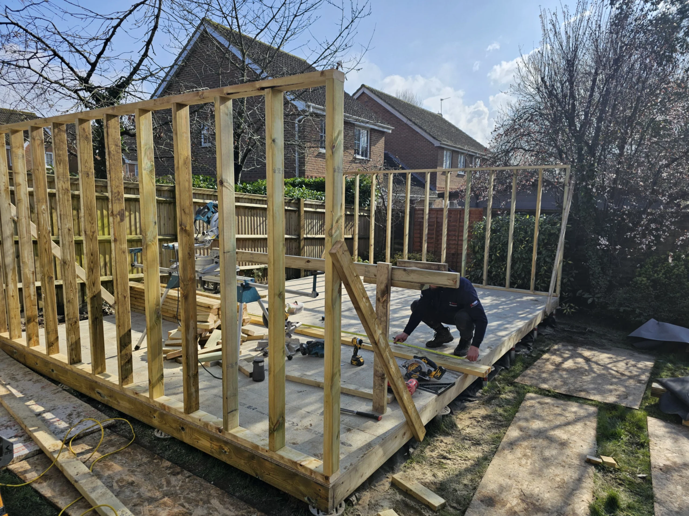

A carpentry Partnership forged in Sussex: Pride and passion for Precision
About ARC Sussex Carpentry
ARC Sussex Carpentry is the product of a strong friendship, a shared work ethic, and a deep passion for quality craftsmanship between two Builders in Brighton. Founded by the skilled Rytis Baltaduonis and the highly accomplished Aaron McPhail. Being skilled carpenters with 15 years of experience, the business began as a natural next step after years of hands-on work in the trade.
Aaron first met Rytis while working for a large construction company. From day one, it was clear they shared the same commitment to precision, reliability, and doing things properly. Both took real pride in their work and quickly stood out for their attention to detail—especially when it came to building bespoke garden rooms. In fact, their work caught the attention of the company itself, which regularly featured their builds on its Instagram page. The positive response was overwhelming.
That recognition sparked a realisation: they had something special. Their skills, shared vision, and natural teamwork were worth building on—and so, ARC Sussex Carpentry was born.
Now working independently across Brighton and the wider Sussex area, Aaron and Rytis bring their combined experience and eye for detail to every project, whether it’s a garden room, loft conversion, home renovation, or high-quality first and second fix carpentry. Clients choose ARC not just for the quality of their work, but for the friendly, down-to-earth service they provide from start to finish.
Living and working in the heart of the Sussex countryside, Aaron and Rytis find daily inspiration in the natural beauty around them. It’s part of what fuels their love for creating spaces that help people make the most of their homes—both indoors and out. Whether it’s a peaceful garden retreat, a brighter living room, or a transformed loft space, they find real joy in helping others improve how they live, work, and enjoy their surroundings.
At ARC Sussex Carpentry, it’s never just about the job. It’s about building with care, creating something meaningful, and doing work that stands the test of time.

Our Vision
To create beautiful, lasting spaces that bring joy, comfort, and connection to everyday life. Inspired by the Sussex countryside and driven by a love for honest craftsmanship, we aim to help people feel more at home in their homes—whether through a handcrafted garden room, a thoughtful renovation, or the perfect finishing detail.
We believe that great carpentry should not only look good but feel right—and that when work is done with care, it speaks for itself.
Our Mission
At ARC Sussex Carpentry, our mission is to deliver high-quality, reliable carpentry with a personal touch. We're here to turn your ideas into real spaces that suit your life, your style, and your surroundings.
We're committed to:
- Crafting each project with precision, passion, and pride
- Building strong, open relationships with the people we work with
- Creating bespoke solutions that enhance both homes and daily living
- Working with honesty, integrity, and the kind of care you only get from people who genuinely love what they do
From the first cut to the final finish, we bring the same energy to every job—because your home deserves nothing less.

Why Wait, Get The Ball Rolling On Your Home and Garden Transformation
Have us realise your vision
Book A Free Consultation